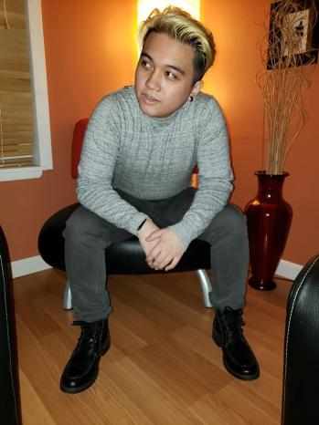

Azriel's SCC WEB120 Portal
Welcome

My name is Azriel Policarpio. I was born in Seattle, Washington and grew up there. I transferred to Central from Bellevue college, changing my degree to an applied sciene in programming from computer science. I feel its easier for me to start out small and work my way up to the harder things. I hope to learn as much as I can to help me in the future make some thing great.
Computers have always been apart of my life thanks to my dad's early introduction of them to me from a young age. Video games dominate most of my free time, I have a small aspiration to delve into the realm of video game development. Aside from video games I have an interest in Dungeons & Dragons, movies and cartoons/comics.